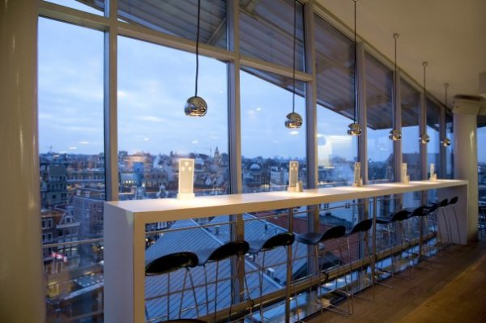
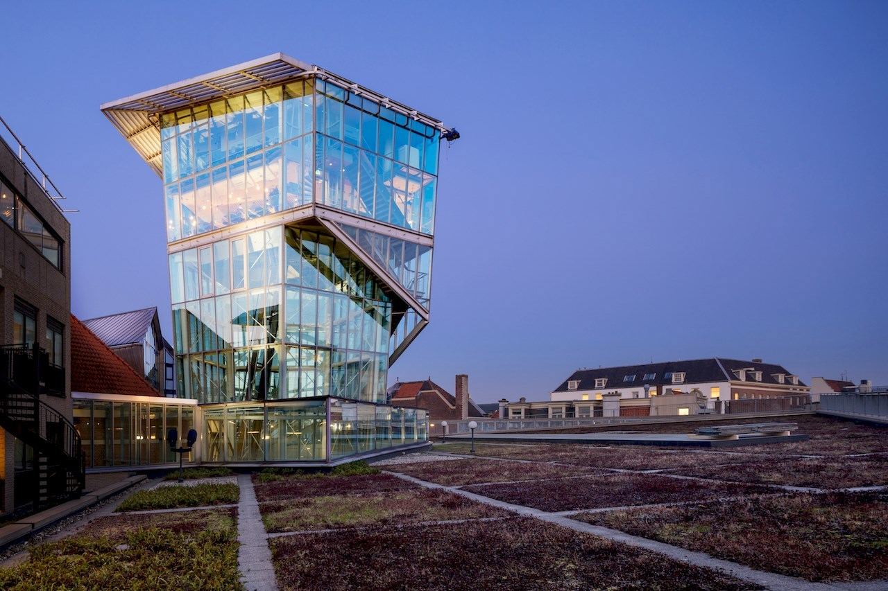

 The Seablue is a neighborhood bistro owned and operated by husband and wife team Anna Weinberg & James Nicholas, along with chef/partner Jennifer Puccio, since 2010. Chef Puccio created a meat-centric menu of New American bistro favorites with unique and flavorful twists. The interior, designed by Ken Fulk, riffs on the butcher shop theme with white hexagonal floor tile, quilted stainless steel walls and drawings of animals marked for cuts. Weinberg, Nicholas and Chef Puccio followed up Marlowe with the San Francisco classic Park Tavern in North Beach in September 2011, the British inspired brasserie The Cavalier in August 2013, and seafood-focused Leo’s Oyster Bar in January 2016.
 New Zealand native Anna Weinberg is the Owner and Managing General Partner of Big Night Restaurant Group, LLC which owns and operates Leo’s Oyster Bar (2016), The Cavalier (2013), S&R Lounge (2013), Park Tavern (2011), and Marlowe (2010). Anna is an industry veteran steeped in experience from iconic New York restaurants such as Danube, Il Buco, and Barbuto, as well as San Francisco staples Town Hall and Ame at the St Regis. Anna was named “Restaurateur of the Year” by San Francisco Magazine in 2012, and named to the San Francisco Business Times’ “40 under 40 List” in 2014.